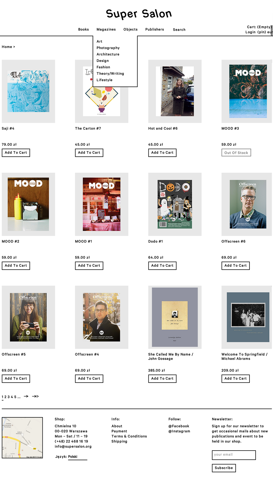
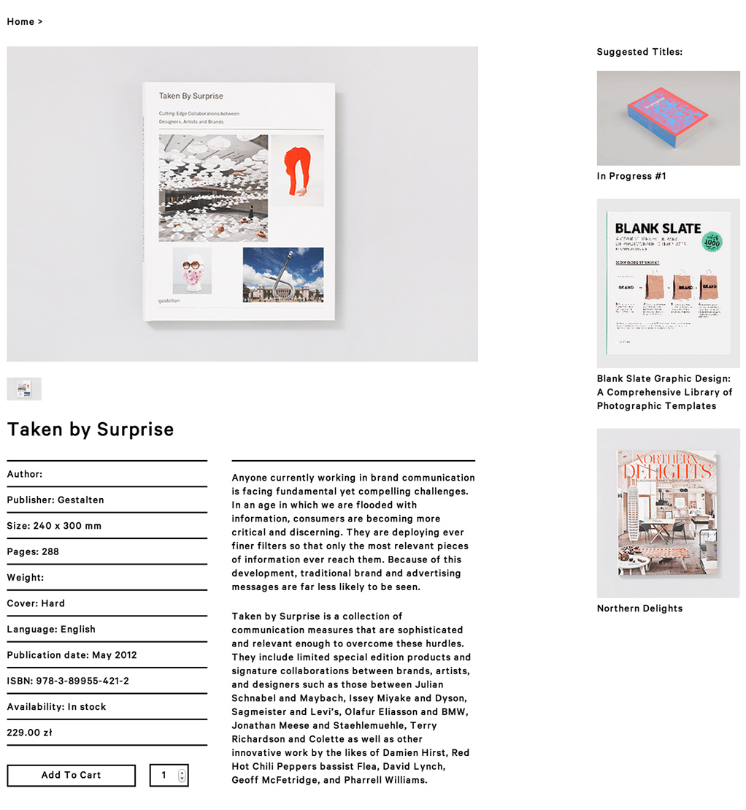
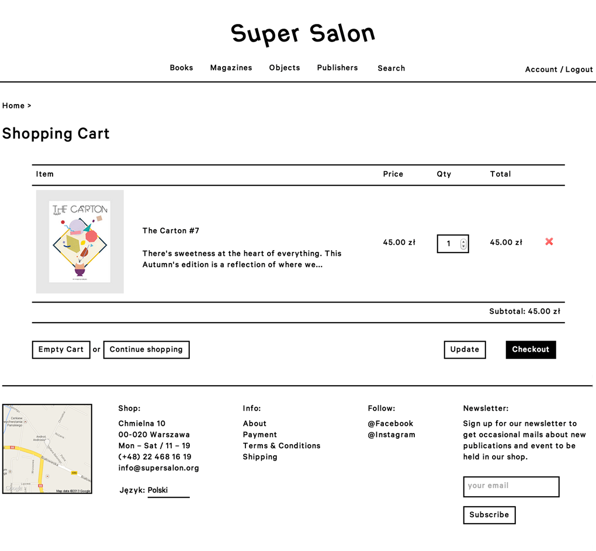
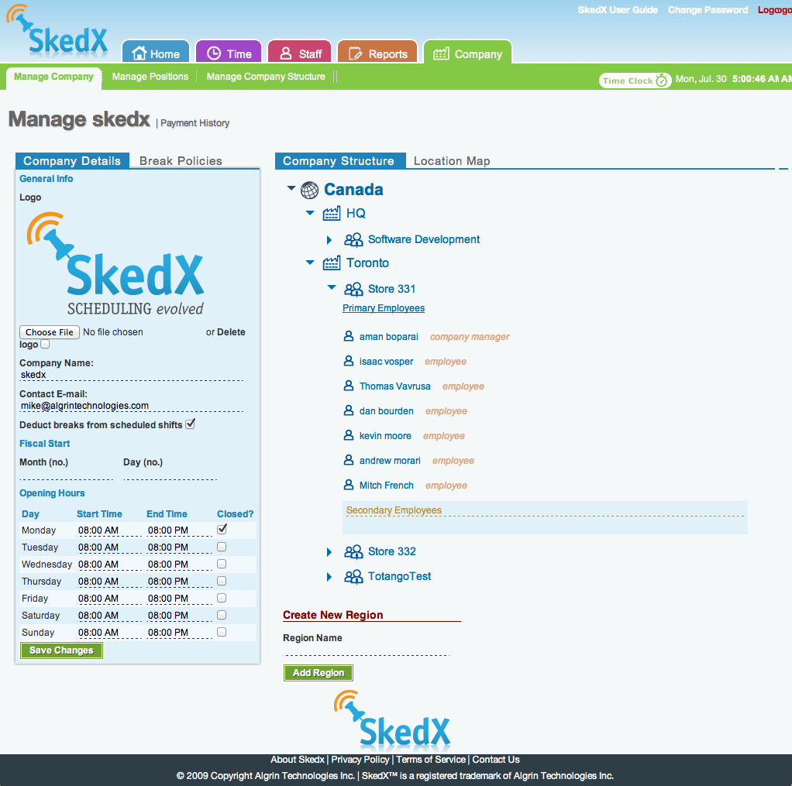
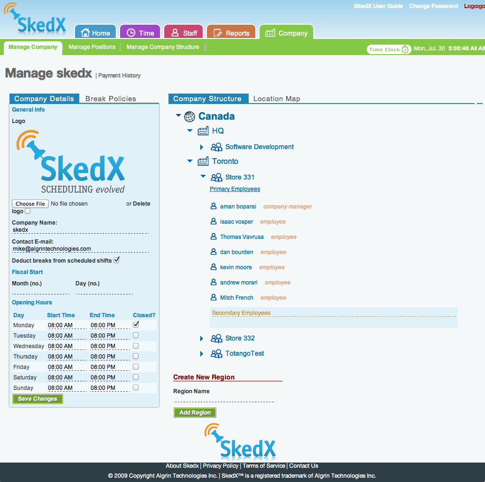

Super Salon
e-commerce for Art & Photography. supersalon.org
Super Salon is an art & photography bookstore in Warsaw. The website is a fully-featured e-commerce solution powered by Spree Commerce.
My Role: I designed & developed the site from start to finish.



Scattered
A photoblog theme for tumblr. scattered-demo.tumblr.com
Tumblr is an experiment turned into a product. The idea behind the unique UI is to rethink the concept of scrolling. Scattered aims to bring the feeling of flicking through polaroids to your tumblog.


ego_eco
e-commerce for a jewellery & fashion Boutique in Warsaw.
Ego & Eco is a design boutique in Warsaw. They promote local designers and sell a variety of jewelery, accessories, clothing and linens.
My Role: I was the developer on this project. The site was developed using openCart. It featured a blog, a special section for featured designers, a product showcase and a smooth two step checkout process.
bridge
Really Simple Group Chat For Business. bridgewith.us
Bridge is social platform for distributed teams and businesses. What makes Bridge unique in 'enterprise social' space is the ability to send messages very targeted groups in your organization, for example, you can send a message to 'Everyone in South Carolina who's working on X', or 'everybody in South Carolina', or just 'Everyone working on X'.
My Role: As head of design & front-end development I was responsible for the entire web interface, which was built with Angular.js and connected to a Rails backend through an API.

Skedx
Employee scheduling made easy. skedx.com
Skedx is an web-based staff scheduling tool for retail/hospitality. It lets managers manage all aspects of staff scheduling, including: vacation management, scheduling, time-clocking, alerts etc.
My Role: As head of design & front-end development, I designed all aspects of the interface, then turned it into reality.
 
